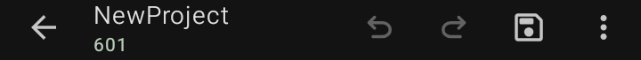
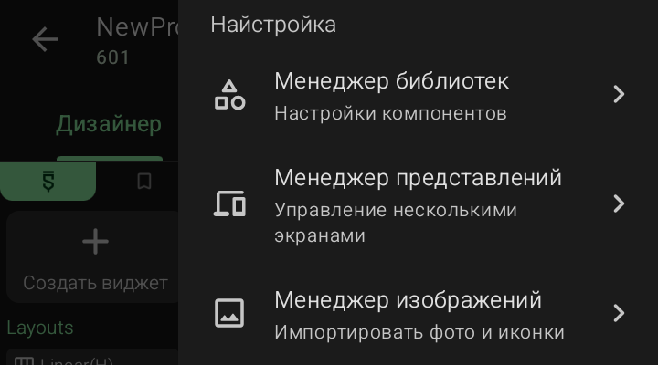

Верхняя панель проекта

Верхняя панель — это шапка рабочего экрана проекта. Здесь находятся название проекта, номер папки и кнопки управления: сохранить, отменить действие, повторить действие и открыть меню.
Панель видна на всех трёх вкладках — «Дизайнер», «События» и «Компонент» — и не меняется при переключении между ними.
Разберём элементы слева направо.
· Стрелка назад
- Слева в шапке.
- Тап — выход из проекта и возврат на главный экран со списком проектов.
- Если есть несохранённые изменения — Sketchware сохранит их автоматически (при включённом автосохранении) или предложит сохранить вручную.
⚠️ Важно: выход из проекта через стрелку не закрывает Sketchware — приложение остаётся в фоне. Чтобы полностью выйти — используй системную кнопку «Назад» на главном экране.
· Имя проекта и номер папки
- В левой части шапки, под стрелкой назад.
- Имя проекта — то, что ты ввёл в поле «Имя проекта» при создании. Например,
NewProject.
- Номер папки — число под именем, например
601. Это внутренний ID проекта в рабочей директории Sketchware.
💡 Совет: номер папки полезен, если ты вручную работаешь с файлами проекта — например, копируешь ресурсы через файловый менеджер. По нему легко найти нужную папку в директории /.sketchware/data/601/.
· Кнопка «Отменить»
- Иконка изогнутой стрелки влево.
- Отменяет последнее действие в текущей вкладке.
- Работает на всех трёх вкладках: убирает добавленный виджет в дизайнере, откатывает блок в логике, отменяет подключение компонента.
- История отмены ограничена — можно откатить несколько последних шагов, но не бесконечно.
💡 Совет: если случайно удалил виджет или блок — сразу нажми «Отменить». Чем позже ты это сделаешь, тем меньше шансов, что действие ещё хранится в истории.
· Кнопка «Повторить»
- Иконка изогнутой стрелки вправо.
- Возвращает действие, которое ты только что отменил кнопкой «Отменить».
- Работает только после отмены — если ты ничего не отменял, кнопка неактивна.
💡 Совет: связка «Отменить / Повторить» — как в текстовых редакторах. Пользуйся, чтобы безопасно пробовать разные варианты разметки или логики.
· Кнопка «Сохранить»
- Иконка дискеты.
- Вручную сохраняет все изменения текущего проекта: разметку, блоки логики, подключённые компоненты, ресурсы.
- Полезна, если автосохранение отключено в настройках Sketchware — иначе проект может сохраняться сам при выходе.
⚠️ Важно: Sketchware Pro 7 не сохраняет проект мгновенно при каждом действии. Если ты закрыл приложение сразу после добавления виджета — изменение может не записаться. Привычка периодически жать «Сохранить» убережёт от потери работы.
· Кнопка меню (⋮)

- Три точки вертикально в правом верхнем углу.
- Тап открывает меню «Настройка» — список разделов для работы с проектом.
- Меню прокручивается: часть пунктов видна сразу, остальные — при свайпе вверх.
Менеджеры ресурсов
- Менеджер библиотек — настройки компонентов.
- Менеджер представлений — управление несколькими экранами.
- Менеджер изображений — импортировать фото и иконки.
- Менеджер звуков — импортировать музыку и звуковые эффекты.
- Менеджер шрифтов — импортировать разные шрифты.
- Менеджер Java/Kotlin — импортировать файлы Java/Kotlin.
- Менеджер ресурсов — управление файлами ресурсов.
- Редактор ресурсов — редактировать файлы ресурсов.
- Менеджер ресурсов — импортировать файлы ресурсов.
Менеджеры кода
- Менеджер разрешений — добавить пользовательские разрешения.
- Менеджер AppCompat — изменить макеты AppCompat.
- Менеджер AndroidManifest — изменить AndroidManifest.
- Просмотреть пользовательские блоки — просмотреть используемые пользовательские блоки.
- Менеджер сжатия кода — минимизировать/обфусцировать приложение с помощью R8.
- Менеджер StringFog — шифровать строки в приложении во время компиляции.
- Показать исходный код — просмотреть встроенные Java- и XML-файлы.
- Менеджер XML-команд — изменить встроенные XML-файлы.
- Менеджер чтения Logcat — читать логи из включённых проектов.
- Менеджер коллекций — мои сохранённые коллекции.
💡 Совет: перед экспериментами с логикой копируй проект через меню действий с проектом на главном экране, а не редактируй рабочий. Так у тебя всегда будет резервная версия.
❌ Частая ошибка: удалять проект через меню действий на главном экране без резервной копии. Функция удаления стирает папку с исходниками — восстановить её без бэкапа невозможно.